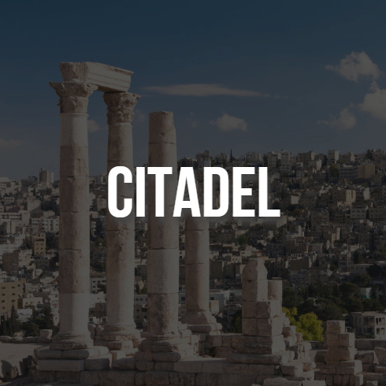
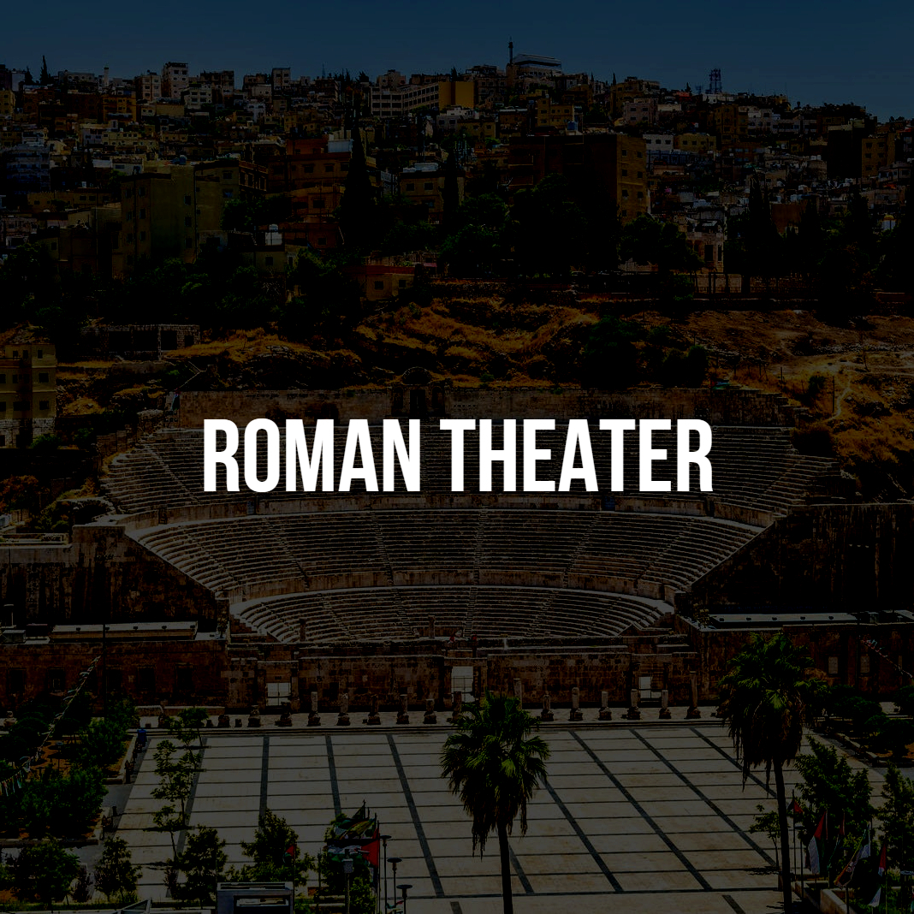
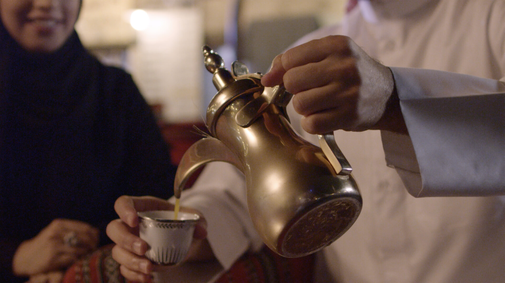
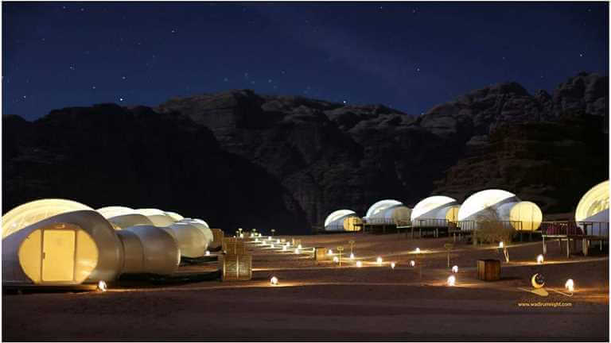
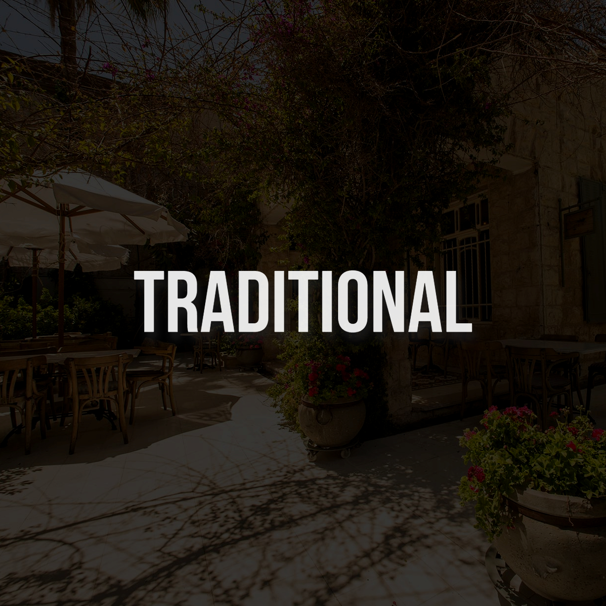
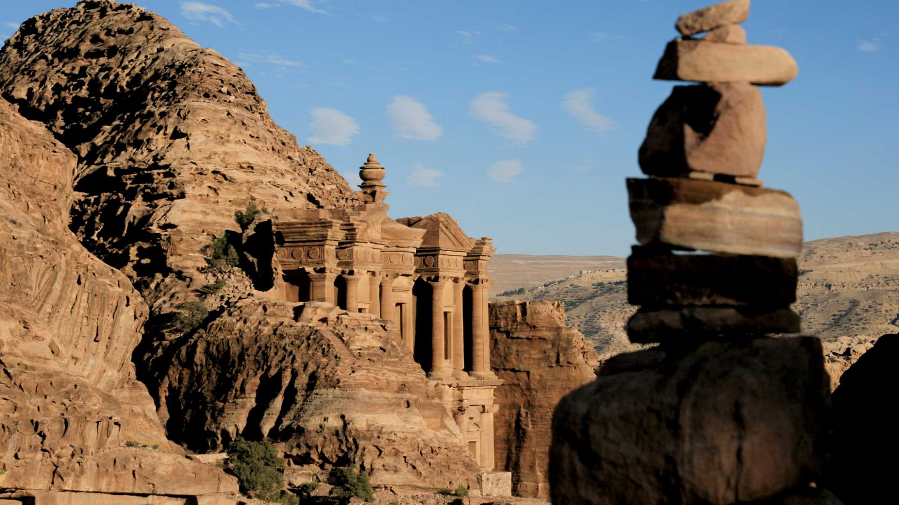
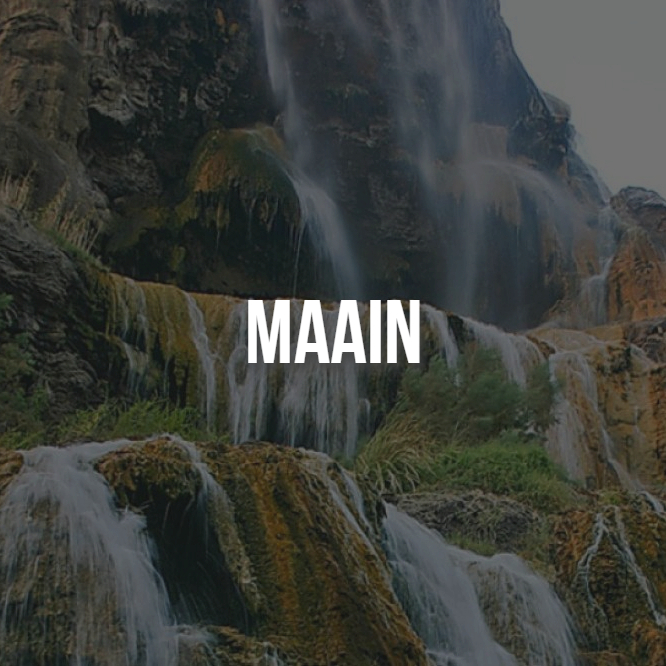

As far as local products go, Jordan is famous for its mosaics which are still produced to this day in the
Madaba area, beautiful hand made rugs,traditional sand bottles, ceramics,mud and beauty products.
Top 5 Facts About Jordan

It's located in the Middle East in South Westeren of Asia. Along with History; there are too many
Civilizations lives and ruled it, starting from before 10000 B.C. up to the Arabian Anbat, The
Romans, The Islamic Period wiich become as the most important place; since it's connected
between
the Parts of Islamic Country (Syria in Northm Palestine and Eygpt in West, Iraq in East and The
Arabian Peninsula in South.)
after that it's ruled by Othman and after The Great Arab Revolt ruled by the Hashmite Family;
Starting with King Abdullah I and now by King Abdullah II.

Along with different Countries, Cultures and the origins of the Population; there are too much
Historical, Adventure, Religions and Nature Places in Jordan, which make it one of the most
places
in World, with more than places registered in UNISCO; as a reserved Places from any Damage or
any
humanitarian intervention.
The Jordanian environment is a rich and varied environment. Jordan enjoys a natural richness,
which
combines the desert and the countryside. According to this ecological diversity, life and
organisms,
both plant and animal are varied.
Top 5 Tips For Tourist
From centuries-old hosting traditions to Eid al-Fitr celebrations, Jordan prides itself on
maintaining high hospitality standards and leaving visitors feeling welcome and cared for.
In Jordan, the visitor will find the Arab customs prevailing in the Levant and the region in
general,
as the customs related to generosity and good treatment of the guest, interpersonal treatment,
and
others do not have much difference between Jordan and the rest of the Arab countries. However,
what
distinguishes Jordan is the homogeneity and intermingling between its culture and the culture of
the
country and the surrounding regions.
The Art Of Qahwa

Sharing coffee is an important part of Jordanian social life and the traditions around serving it
are
a testament to Jordanian famed hospitality.
Arabic coffee is considered a symbol of generosity, and it replaced camel milk among the Arabs,
so
they took pride in drinking it. Men hold special assemblies for it, which are called shabba,
coffee,
or diwani, and usually dates are served with them until they are now associated with them after
their availability in large quantities.
Desert Nights

Along the Clear Sky in Desert; it's important to make some Special Nights at Wadi Rum.
Deserts have great natural beauty, can be a great place to visit and also have an unforgettable
experience in desert camping. Desert camping is an adventure for those who like to try new
things.
Traditionals

Jordan is a country rich in ancient handicrafts that have been inherited by successive
generations,
such as the manufacture of handmade carpets, ceramic and pottery dishes, baskets, embroidery and
sand bottles decorated and colored with types of sand, in addition to handmade jewelry made of
silver
The city of Madaba, in the center of the Kingdom, is one of the most important crafts cities in
the
world in mosaic art, as the city is famous for its special legacy in its alleys, ancient
Byzantine
churches, mosques and unique architecture, and it also contains the only institute in the world
to
teach this art.
The Best Time to Visit Jordan

Jordan has an extraordinary range of climates, in which summers are hot, and winters can be
cold
and windy.
During decades of regional political turmoil, Jordan has succeeded in maintaining its stability
and
building solid foundations for economic growth, as it dealt with regional crises in a way that
enabled it to build good relations with all neighboring countries, and in the past years it
became a
regional center for investors and business owners. Investors have shown their confidence in
Jordan
by opening more than 10,000 companies and more than fifty business ventures for multinational
companies. Investors' efforts contributed to creating a high momentum for the growth of the
economy,
the effects of which were evident in the booming urban, industrial and tourism movement.
Wellness And SPA

The lovely Hammamat Ma’in is another favoured spot with a hot waterfall, thermal mineral springs
and
a full compliment of resort facilities. It lies south west of Madaba, 60 Km from Amman.
The Dead Sea region is considered one of the most important tourist areas for environmental
hospitalization in the world, as it is characterized by a set of natural factors, which made it
a
competitive position in the region in the field of medical tourism and hospitalization due to
its
unique climatic characteristics, both its absence of moisture, and its containment of sulfur
eyes
that made it He is qualified to treat many diseases, especially skin diseases, which are
widespread,
with 25 million patients in Europe, in addition to rheumatoid treatment. Thus, the Dead Sea
region
possessed important elements of tourist attraction not only in hospitalization tourism, but also
in
its distinction in leisure tourism and ecotourism.